Thirty-seven levels rising above the coast, every residence turned toward the sea. At the very top, the roof opens to pools, gardens and lounges above the canopy.
- 37Levels
- 432Units
- 47Amenities

Thirty-seven levels rising above the coast, every residence turned toward the sea. At the very top, the roof opens to pools, gardens and lounges above the canopy.